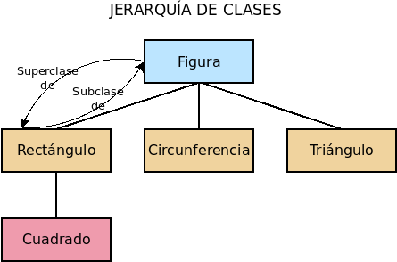

1.5. Objetos¶
En Javascript NO existen clases[1], sólo objetos y éstos no son más que colecciones de atributos, los cuales pueden ser también funciones, esto es, métodos:
const rectangulo = {
altura: 10,
anchura: 7,
area: function() { // Como este atributo es una función, actúa como método.
return this.altura*this.anchura;
}
}
console.log(rectangulo.area()); // 70.
rectangulo.anchura = 8;
console.log(rectangulo.area()); // 80.
Nota
Al ser las funciones ciudadanas de primera clase en Javascript, los
métodos son atributos cuyo valor es una función. Por este motivo, podemos
incluir los métodos dentro del término atributos y así se hará a lo largo del
texto. La fórmula expuesta en el código para definir rectangulo deja
clara esta equivalencia, puesto que area se define de modo análogo a
anchura y altura. Sin embargo, hay una sintaxis simplificada para definir
métodos que enmascara esta equivalencia:
const rectangulo = {
altura: 10,
anchura: 7,
area() { // Como este atributo es una función, actúa como método.
return this.altura*this.anchura;
}
}
La utilizaremos ya que hemos dejado clara la naturaleza de los métodos como atributos función.
Así, pues, hemos construido un objeto ex novo a diferencia de todos esos lenguajes orientados a objetos en que la creación de una clase implica la instanciación de una clase. Comenzaremos por describir cómo son estos objetos sin entrar a discutir estrategias para tener objetos semejantes (o sea, de una misma clase) o parecidos[2]
1.5.1. Características¶
1.5.1.1. Definición¶
En el ejemplo anterior, ya se expuesto la sintaxis básica para definir un objeto: un diccionario de pares clave/valor donde la clave es una cadena o un símbolo y se separa del valor mediante dos puntos. Si los valores se encuentran en variables aparte cuyo nombre coincide con el que tendrá la clave:
const anchura = 10, altura = 7;
const rectangulo = {
altura: altura,
anchura: anchura,
area() { return this.altura*this.anchura; }
}
entonces puede usarse una sintaxis simplificada:
const anchura = 10, altura = 7;
const rectangulo = {
altura,
anchura,
area() { return this.altura*this.anchura; }
}
incluso para el método área, aunque como en este caso no hemos podido hacer uso de la simplificación al no haber definido aparte la función area,
Por supuesto, tenemos total libertad para extender el objeto añadiendo nuevos atributos:
rectangulo.escalar = function(factor) {
this.altura *= factor;
this.anchura *= factor;
}
o para eliminar atributos ya definidos:
delete rectangulo.escalar;
Obsérvese que al hacer las definiciones, la clave no se ha escrito entre comillas, sino sin ellas, pese a lo cual se sobreentiende como un literal. Si la clave que se desea usar, se encuentra dentro de una variable, entonces se requiere una sintaxis especial que haga entender al procesador que la clave no es literal:
const d1 = "altura", d2 = "anchura";
const rectangulo = {
[d1]: 10,
[d2]: 7,
area() { return this[d1]*this[d2]; }
}
1.5.1.2. Uso¶
Para utilizar los atributos basta con usar la sintaxis del punto:
console.log(rectangulo.altura); // 10.
console.log(rectangulo.area()); // 70.
rectangulo.area = 8;
console.log(rectangulo.area()); // 80.
aunque también podemos usar una sintaxis basada en corchetes:
rectangulo["anchura"] = 5;
rectangulo["area"](); // 80.
Esta segunda sintaxis es interesante cuando el nombre de la propiedad la tenemos dentro de una variable:
let dimension = "anchura";
rectangulo[dimension] = 6;
1.5.1.3. Descriptores¶
Hasta ahora, al añadir atributos a un objeto nos hemos dedicado a enchufarlos sin más. Sin embargo, cada atributo posee un descriptor que define las características del atributo dentro del objeto.
- Object.getOwnPropertyDescriptor()
Muestra el desriptor del atributo de un objeto:
Object.getOwnPropertyDescriptor(rectangulo, "altura") { value: 10, writable: true, enumerable: true, configurable: true }
Además del valor, obtenemos que el atributo es:
writable, razón por la cual podemos darle un valor distinto.
configurable, razón por la cual podríamos cambiar estas propias características, haciendo que, por ejemplo, el valor fuera inmutable.
enumerable, lo que significa que el atributo será más visible, esto es, que algunas funciones que veremos más adelante serán capaces de ver que este atributo existe[3].
Hay dos tipos de descriptores:
Descriptor de dato, que describe un atributo normal como el anterior y que se caracteriza por tener un valor (value).
Descriptor de acceso, que describe lo que en Python se denomina propiedad, esto es, un dato que dispone de un setter para establecer su valor y un getter para devolverlo. Por ejemplo, podríamos convertir las dos dimensiones de nuestro rectángulo en sendas propiedades para controlar que siempre introduzcan un número como valor. En este caso, el descriptor, en vez de disponer value, dispondrá set y get, Tampoco tendrá la característicva writable, que no tiene sentido, puesto que si se desea que la propiedad sea de sólo lectura, basta con no definir el setter. Las otras dos características, sin embargo, siguen teniendo validez. Dejaremos la discusión de las propiedades para el siguiente epígrafe.
Al definir un atributo (bien al crear un objeto, bien añadiéndolo después), las
características writable, enumerable o configurable estarán siempre
a true. Para que adopten otro valor pueden usarse:
- Object.defineProperty()
Permite definir o redefinir el descriptor de un atributo. Por ejemplo:
Object.defineProperty(rectangulo, "color", { value: "negro", configurable: true })
De esta forma añadimos un nuevo atributo puesto que el atributo color no existía previamente, y, además, indicamos cuál será el descriptor del dato. En el código no hemos incluido dos características (writable y enumerable), por lo que estas se fijarán a false. Cuando lo que se hace es utilizar un atributo ya existente, las características no enunciadas mantendrán su valor.
Con esta definición, no podremos cambiar el color del rectángulo (writable es false):
rectangulo.color = "azul"; rectangulo.color; // Sigue siendo negro.
pero podremos alterar el descriptor puesto que configurable lo fijamos a verdadero. También podremos borrar el atributo ya que es configurable quien controla esta posibilidad.
- Object.defineProperties()
Como el anterior pero permite definir o redefinir a la vez los descriptores de varios atributos:
Object.defineProperties(rectangulo, { color: { writable: false }, altura: { configurable: false }, anchura: { configurable: false }, area: { enumerable: false } )
Gracias a esto, no podremos borrar la altura ni la anchura del rectángulo.
Nota
Ambos métodos devuelven el propio objeto sobre el que se definen los descriptores (en este caso rectangulo).
1.5.1.4. Lista de atributos¶
Hay algunos modos de conocer cuáles son los atributos que tenemos disponibles en un objeto:
- Object.getOwnPropertyNames()
Devuelve un array con los nombres de todos los atributos propios del objetos, sean estos enumerables o no:
Object.getOwnPropertyNames(rectangulo); // [ 'altura', 'anchura', 'area', 'color' ]
- Object.keys()
Devuelve un array con los nombres de los atributos enumerables disponibles en el objeto:
Object.getOwnPropertyNames(rectangulo); // [ 'altura', 'anchura', 'color' ]
donde no aparece
areapuesto que la definitmos antes como no enumerable. Sin embargo, la diferencia con respecto a la función anterior, va más allá de listar o no los atributos enumerables. Object.keys() lista también atributos que, aunque no han sido definidos en el propio objetos, los ha heredado. Aún no hemos tratado las características de la POO. aplicadas a Ĵavascript, pero ya veremos cómo unos objetos pueden heredar de otros.- .hasOwnProperty(name)
Es un método del objeto que comprueba si el objeto tiene un atributo propio con el nombre suministrado, sea enumerable o no:
rectangulo.hasOwnProperty("area"); // true.
Nota
Obsérvese que este método .hasOwnProperty(name) no lo hemos definido nosotros en el objeto, así que forzosamente debe ser un método heredado. Porque no es propio, no nos lo devolvió Object.getOwnPropertyNames() y, porque no es enumerable, no lo hizo Object.keys()
1.5.1.5. Propiedades¶
Las propiedades son atributos que, en vez de definir un valor, definen un setter y un getter, aunque alguna de estas dos funciones puede no existir. Podemos definir un atributo de este tipo declarando el descriptor explícitamente (con Object.defineProperty() o Object.defineProperties()):
Object.defineProperty(rectangulo, "perimetro", {
get: function() {
return 2*(this.anchura + this.altura);
},
enumerable: true
});
rectangulo.perimetro; // 34, o sea, 2*(10 + 7)
En este caso, hemos añadido una propiedad de sólo lectura, esto es, con getter, pero no con setter. Alternativamente, la definición puede hacerse así:
Object.defineProperty(rectangulo, "perimetro", {
get() {
return 2*(this.anchura + this.altura);
},
enumerable: true
});
Las propiedades también pueden definirse en el momento de crear el objeto. Por
ejemplo, si quisiéramos crear el objeto rectángulo de manera que anchura y
altura fueran propiedades, podríamos hacer lo siguiente:
const rectangulo = {
get altura() {
return this._altura;
},
set altura(value) {
if(typeof value !== 'number') throw new TypeError('Valor no numérico');
this._altura = value;
},
get anchura() {
return this._altura;
},
set anchura(value) {
if(typeof value !== 'number') throw new TypeError('Valor no numérico');
this._anchura = value;
},
area: function() { // Como este atributo es una función, actúa como método.
return this.altura*this.anchura;
}
}
rectangulo.altura = 10;
rectangulo.anchura = "No soy un número"; // Provoca error.
Nótese que en realidad los atributos anchura y altura no almacenan ningún valor, por lo que necesitamos crear sendos atributos adicionales pàra cumplir esta tarea. Estos atributos, sin embargo, no han sido añadidos de ningún modo especial por lo que son perfectamente accesibles y enumerables. En el código anterior, nos hemos limitado a usar la notación del subrayado para hacer notar que el atributo no debería usarse. Podemos usar otras técnicas más elaboradas. Por ejemplo, utilizar como claves símbolo y, además, hacer no enumerable el atributo:
const altura = Symbol('altura');
const anchura = Symbol('anchura');
const rectangulo = {
get altura() {
return this[altura];
},
set altura(value) {
if(typeof value !== 'number') throw new TypeError('Valor no numérico');
this[altura] = value;
},
// etc...
}
Object.defineProperties(rectangulo, {
[altura]: {enumerable: false},
[anchura]: {enumerable: false}
});
1.5.1.6. Creación de objetos¶
Para la construcción simple de objetos podemos valernos de diferentes estrategias:
La construcción literal con llaves que ya se ha visto:
const o = {x: 1, y: 2}
Usando el constructor Object:
const o = new Object() [o.x, o.y] = [1, 2]
1.5.1.7. Observación¶
Por hacer
Breve explicación de Proxy.
1.5.2. Manejo de objetos¶
El ejemplo expuesto hasta aquí (un objeto único que definimos y usamos) no es un ejemplo en absoluto real. Lo habitual es que requiramos crear muchos objetos que comparten una misma naturaleza o bien una naturaleza semejante. Así, pues, el quid de la cuestión está en poder construir objetos de naturaleza idéntica o semejante de manera que se cumplan los principios de abstracción, encapsulación, reutilización y extensibilidad.
Esto lo resuelven generalmente los lenguajes orientados a objetos recurriendo a las clases y convirtiendo a cada objeto en la instanciación de su clase correspondiente. La herencia, además, es el mecanismo que principalmente permite la reutilización del código. Tal es el caso de lenguajes como C++, Java o Python. Javascript tiene una filosofía totalmente distinta; pero, como es enormemente versátil, es capaz de implementar los objetos usando esta estrategia hereditaria de clases. Sin embargo, hay voces extremadamente críticas con trasladar las clases a Javascript e, incluso, con utilizar la herencia como estrategia para la reutilización del código.
Nota
A este respecto son muy interesantes las lecturas de:
El artículo Why prototypal inheritance matters de Aadit M Shah, basado en la herencia (y la composición) prototípica.
El demoledor artículo Two pillars of Javascript (part I) de Eric Elliott, que critica ferozmente la herencia.
El artículo Goodbye, Object Oriented Programming de Charles Scalfani que profundiza en los problemas de POO. basada en la herencia de clases.
El artículo, también de Eric Elliott, The Hidden Treasures of Object Composition que discute sobre la composición de objetos
Con Javascript podemos practicas enfoques distintos:
Utilizar la herencia sin recurrir a la clases, sino basándonos en el concepto del prototipo, que es realmente en lo que se basa la POO. de Javascript (composición de objetos por delegación).
Recrear el modelo de clases jerárquicas y herencia.
Ensayar la composición de objetos por concatenación como alternativa a la herencia.
1.5.2.1. Composición por delegación (herencia)¶
Advertencia
Como ya se formuló, hay bastantes voces críticas con el uso de la herencia para la reutilización de código. Revise la composición como alternativa. Otras opiniones sostienen que para escoger si es mejor reutilizar a través de la herencia o a través de la composición debe aplicarse el principio de sustitución de Liskov.
En los lenguajes que utilizan clases, cada clase constituye la generalización de un tipo distinto de objeto, de manera que a la definición de una clase (superclase) se añaden nuevas definiciones de atributos y métodos para constituir una clase derivada (subclase). A conservar los atributos y métodos de la superclase (o clase padre) es a lo que se denomina herencia:
La filosofía de Javascript es, sin embargo, totalmente distinta en la medida
en que no existen clases[4]. La herencia de este lenguaje se conoce como
herencia prototípica y consiste en que un objeto deriva (hereda) de
otro llamado prototipo. Por tanto, si el objeto «b» deriva del objeto
«a», «a» es el prototipo de «b». El prototipo «a», a su vez, puede tener otro
prototipo del que deriva y así sucesivamente en lo que se conoce como
cadena de prototipos. Obviamente, la cadena no puede ser infinita, sino
que tiene un final en el que el último prototipo deriva de null:
Para implementar la cadena cada objeto posee una propiedad [[Proto]], que
oficiosamente se nombró __proto__ y con tal nombre acabó pasando al
estándar, que apunta al prototipo. Cuando se invoca el atributo de un objeto,
primero se comprueba si éste está definido en el propio atributo, si lo está se
devuelve su valor y, si no, se comprueba si se encuentra definido en el
prototipo. Esta operación se repite sucesivamente de prototito a prototipo hasta
que o bien se encuentra el valor del atributo o se llega al final de la cadena
sin encontrarlo. En este segundo caso, Javascript devolverá undefined.
Nota
La asignación no funciona así, si se da valor a un atributo, este se define sobre el propio objeto.
Nota
El prototipo de un objeto creado ex novo:
const obj = {}
no es null, sino aquel en que se encuentran definidos métodos como
.hasOwnProperty(name): Object.prototype:
obj.__proto__ === Object.prototype; // true
Object.prototype si es el último objeto de la cadena y por tanto su
prototipo es null:
Object.prototype.__proto__ === null; // true.
De dónde sale este Object.prototype, se entenderá mejor al tratar las
funciones constructoras.
1.5.2.1.1. Prototipado con objetos¶
En la práctica, la forma de crear un objeto cuyo prototipo sea otro objeto es utilizar Object.create()[5] que permite la clonación:
// Objeto prototipo para los rectángulos
const rectangulo = {
// Adicionalmente, podríamos definir
// getters y setters para altura y anchura.
dimensiones: 2 // Atributo estático.
get area() {
return this.altura * this.anchura;
},
get perimetro() {
return 2*(this.anchura + this.altura);
},
escalar(factor) {
this.anchura *= factor;
this.altura *= factor;
return this;
}
}
// Ya podemos definir rectángulos, primero definiendo su prototipo
const rect1 = Object.create(rectangulo);
// Y después añadiéndole los valores particulares de sus atributos.
rect1.altura = 5;
rect1.anchura = 6;
Esta es, ciertamente, una forma muy sucia de construir nuevos objetos a partir del prototipo, pero podriamos pulirla añadiendo un método de creación, sabiendo que Object.create admite como segundo argumento un objeto que describa propiedades adicionales del objeto a la manera que lo hace Object.defineProperties:
const rectangulo = {
// Genera rectángulos definiendo su altura y anchura.
crear(altura, anchura) {
return Object.create(this, {
altura: {
value: anchura,
enumerable: true
},
anchura: {
value: altura,
enumerable: true
}
});
},
dimension: 2,
get area() {
return this.anchura * this.altura;
},
get perimetro() {
return 2*(this.anchura + this.altura);
},
escalar(factor) {
this.anchura *= factor;
this.altura *= factor;
return this;
}
}
const rect1 = rectangulo.crear(5, 6);
const rect2 = rectangulo.crear(2, 8);
Para implementar la herencia (por ejemplo, generar cuadrados) deberíamos hacer que el prototipo de la clase derivada fuera rectangulo:
const cuadrado = Object.create(rectangulo, {
crear: {
value: function(lado) {
this.lado = lado;
}
},
anchura: {
get() {
return this.lado;
}
},
altura: {
get() {
return this.lado;
}
}
});
const cua = cuadrado.crear(10);
El método de derivación es bastante artesanal y, además, nos obliga a definir todos los métodos mediante descriptores. Una alternativa más explícita es definir un método para extender el prototipo del que queremos que deriven otros prototipos[6]:
// ... definición de rectángulo ...
/* Extiende cualquier prototipo */
rectangulo.extender = function(props) {
return Object.create(this, props);
}
Pero esta definición del método seguiría obligándonos a hacer todas las
definiciones mediante descriptores. Además, extender es un método
absolutamente general, así que no lo definiremos en rectangulo, sino en una
clase más general llamada base del que partan nuestras derivaciones:
Para lo cual deberíamos escribir:
// Obtiene los descriptores de todas los atributos enumerables de un objeto
function attrs2descr(obj) {
return Object.fromEntries(Object.keys(obj || {}).map(e => [e, Object.getOwnPropertyDescriptor(obj || {}, e)]));
}
const base = {
/* Genera un objeto a partir del prototipo */
crear() {
const self = Object.create(this);
if(typeof self?.inicializar === "function") self.inicializar(...arguments);
return self;
},
/* Genera un nuevo prototipo extendiendo éste */
extender(attrs, props) {
return Object.create(this, Object.assign(attrs2descr(attrs), props));
},
/* Añade o modifica atributos al propio prototipo */
incluir(attrs, props) {
return Object.defineProperties(this, Object.assign(attrs2descr(attrs), props));
}
}
const rectangulo = base.extender({
inicializar(anchura, altura) {
this.anchura = anchura;
this.altura = altura;
},
dimension: 2,
get area() {
return this.anchura * this.altura;
},
get perimetro() {
return 2*(this.anchura + this.altura);
},
escalar(factor) {
this.anchura *= factor;
this.altura *= factor;
return this;
}
});
const rec1 = cuadrado.crear(5, 7),
rec2 = cuadrado.crear(2, 5);
const cuadrado = rectangulo.extender({
inicializar(lado) {
this.lado = lado;
},
get anchura() {
return this.lado;
},
get altura() {
return this.lado;
}
});
const cua1 = cuadrado.crear(10),
cua2 = cuadrado.crear(5);
El código es largo, así que vayamos por partes:
La función
attrs2decrobtiene los descriptores de los atributos enumerables del argumento. Por ejemplo, del objeto:{ a: 1, b: 2 }
obtiene:
{ a: { value: 1, writable: true, enumerable: true, configurable: true }, b: { value: 2, writable: true, enumerable: true, configurable: true } }
Así evitamos nosotros el engorro de tener que escribir los descriptores como en nuestro primer ejemplo. Dos de los métodos que hemos usado para ello ya están explicados (Object.keys() y Object.getOwnPropertyDescriptor()) y se justifica claramente su uso: el primero devuelve en una secuencia el nombre de los atributos enumerables de un objeto y el segundo sirve para obtener el descriptor a partir del nombre del atributo. Como la operación hay que repetirla para cada atributo, se usa Array.prototype.map(), con el que logramos obtener una secuencia de tuplas
(nombre_atributo, descriptor_atributo). Finalmente, se genera el objeto con los descriptores gracias a Object.fromEntries().Como nuestra intención es permitir que el usuario pueda también escribir en un segundo argumento directamente descriptores (por eso, el método es
extender(attrs, props)), necesitamos juntar ambos objetos en uno solo. Para ello utilizamos Object.assign(). Este método copia en el objeto proporcionado como primer argumento, los atributos que contiene el objeto proporcionado como segundo argumento (y tercero y cuarto, etc.). Devuelve, además, el objeto que se pasó como primer argumento.Hemos aprovechado la creación de un prototipo
basepara definir tres métodos:extender, que es el que buscábamos inicialmente y que con Object.create(), como en la versión anterior, genera un nuevo prototipo a partir de otro añadiendo o redefiniendo ciertos atributos.incluirque, en vez de generar un nuevo objeto, modifica el propio prototipo, de ahí que use Object.defineProperties().crearque tiene la finalidad de generar un objeto (un rectángulo particular, por ejemplo) a partir del prototipo (el prototiporectangulo). Utiliza Object.create() para tal fin e invoca un método llamadoinicializar, que es el encargado de definir los valores iniciales del objeto.
Gracias a todo anterior nos abstraemos de la técnica de derivación y derivar un nuevo prototipo a partir de otro implica únicamente utilizar el método
extenderdefiniendo los nuevos atributos o redefiniendo alguno ya existente. Si los objetos del nuevo prototipo se inicializan de distinta forma, habrá que indicarlo escribiendo un métodoinicializar.
Nota
Si Object.assign() es capaz de juntar varios objetos en uno solo,
¿por qué no hemos usado esta versión simplificada que no requiere la función
attrs2decr?
function extender(attr, prop) {
return Object.assign(Object.create(this, prop), attrs);
}
En ella creamos primero el objeto cuyo prototipo es rectángulo y luego
añadimos los atributos contenidos en attrs. El problema de esta solución
es que Object.assign() copia correctamente los atributos normales y los
métodos, pero no las propiedades para las cuales copia simplemente el valor
evaluado en el momento y no la función getter asociada.
attrs2dec y base son código totalmente genérico, así que podríamos
tomarlo para construir cualquier jerarquía de objetos usando esta técnica. Si
usamos el patrón del módulo, lo dejamos listo para
futuros usos:
/* Base para derivar prototipos y crear objetos */
const base = (function() {
// Obtiene los descriptores de todas los atributos enumerables de un objeto
function attrs2descr(obj) {
return Object.fromEntries(Object.keys(obj || {}).map(e => [e, Object.getOwnPropertyDescriptor(obj || {}, e)]));
}
return {
/* Genera un objeto a partir del prototipo */
crear() {
const self = Object.create(this);
if(typeof self?.inicializar === "function") self.inicializar(...arguments);
return self;
},
/* Genera un nuevo prototipo extendiendo éste */
extender(attrs, props) {
return Object.create(this, Object.assign(attrs2descr(attrs), props));
},
/* Añade o modifica atributos al propio prototipo */
incluir(attrs, props) {
return Object.defineProperties(this, Object.assign(attrs2descr(attrs), props));
}
}
})();
- Manipulación del prototipo
Advertencia
Alterar la cadena de prototipos afecta drásticamente al rendimiento de la aplicación, así que está fuertemente desaconsejado.
Ya se ha dejado apuntado más arriba que todo objeto dispone de un atributo
__proto__que apunta al prototipo del objeto. Esta atributo es tanto de lectura como de escritura, por lo que sirve tanto para consultar cuál es el prototipo de un objeto como para cambiarlo. Sin embargo, en principio, fue una extensión ajena al estándar que se aceptó en ES2015 por compatibilidad con los navegadores. La consulta y manipulación del prototipo debe hacerse con:- Object.getPrototypeOf()
Devuelve el prototipo del objeto.
- Object.setPrototypeOf()
Cambia el prototipo del objeto.
Por ejemplo:
const o = {x: 1}; Object.getPrototypeOf(o) === Object.prototype; // true p = Object.create(o); p.y = 2 Object.getPrototypeOf(p) === o; // true Object.setPrototype(p, Object.prototype); // El prototipo de p ya no es o. p.x; // undefined Object.getPrototypeOf(p) === Object.prototype; // true
1.5.2.1.2. Prototipado con constructores¶
El método anterior, basado en prototipar directamente con objetos, es el modo más claro de entender la composición por delegación. Sin embargo, no es el original de Javascript que, en un principio, intentó acercarse a los programadores formados en lenguajes como Java o C++ utilizando un constructor y el operador new[7].
Para entender este método debemos acercarnos al concepto de función constructora (o constructor):
function Rectangulo(altura, anchura) {
this.altura = altura;
this.anchura = anchura
}
const rect = new Rectangulo(10, 7);
En este caso Rectangulo es una función constructora que se caracteriza por:
Debe usarse utilizando el operador new.
El uso de tal operador provoca que el contexto (
this) de la función sea el propio objeto que se esté construyendo y que implícitamente se devuelva tal objeto.Que el atributo
prototypede la función es el prototipo del objeto generado. Por tanto, en este caso:rect.__proto__ === Rectangulo.prototype
Como consecuencia de esto último, para crear atributos comunes a todos los
objetos construidos con la función, es necesario añadirlos a
Rectangulo.prototype. Por tanto:
function Rectangulo(altura, anchura) {
this.altura = altura;
this.anchura = anchura
}
// Cuidado con usar Object.assign: no funcionarán las propiedades.
Object.defineProperties(Rectangulo.prototype, {
dimension: { value: 2 },
area: {
get() { return this.anchura * this.altura; }
},
perimetro: {
get() { return 2*(this.anchura + this.altura); }
},
escalar: {
value: function(factor) {
this.anchura *= factor;
this.altura *= factor;
return this;
}
}
});
const rect = new Rectangulo(10, 7);
rect.constructor = Rectangulo; // El constructor del objeto es Rectangulo.
Nota
Con este método, el atributo estático tiene el inconveniente de que
estará disponible en rect.dimensiones, pero no en
Rectangulo.dimensiones.
Visto esto, ¿cómo podríamos derivar otro tipo de objetos? Esto nuevos objetos
deberían disponer de su propia función constructora cuyo atributo prototype
tuviera por prototipo el atributo prototype del constructor del que deriva.
Por tanto:
function Cuadrado(lado) {
this.lado = lado;
}
Cuadrado.prototype = new Rectangulo();
Cuadrado.prototype.constructor = Cuadrado;
/* Atributos adicionales */
Object.defineProperties(Cuadrado.prototype, {
anchura: {
get() { return this.lado; }
},
altura: {
get() { return this.lado; }
}
});
La clave está en:
Cuadrado.prototype = new Rectangulo();
ya que provoca que el prototipo de los objetos cuadrados
(Cuadrado.prototype) enlace con el prototipo de los objetos rectangulares
(Rectangulo.prototype)[8]. Ahora que ya sabemos cómo se deriva usando
constructores, perfilemos está técnica para abstraernos de ella tal como hicimos
al prototipar con objetos:
function attrs2descr(obj) {
return Object.fromEntries(Object.keys(obj || {}).map(e => [e, Object.getOwnPropertyDescriptor(obj || {}, e)]));
}
function Base() {
if(typeof this.inicializar === "function") this.inicializar(...arguments);
}
Object.assign(Base, {
extender(attrs, props) {
const constructor = function() { Base.call(this, ...arguments); }
constructor.prototype = new this();
Object.defineProperties(constructor.prototype, Object.assign(attrs2descr(attrs), props));
constructor.prototype.constructor = constructor;
Object.assign(constructor, this);
return constructor
},
incluir(attrs, props) {
Object.defineProperties(this.prototype, Object.assign(attrs2descr(attrs), props));
return this;
}
});
const Rectangulo = Base.extender({
inicializar(altura, anchura) {
this.altura = altura;
this.anchura = anchura
},
dimension: 2,
get area() {
return this.anchura * this.altura;
},
get perimetro() {
return 2*(this.anchura + this.altura);
},
escalar() {
this.anchura *= factor;
this.altura *= factor;
return this;
}
});
const rec1 = new Rectangulo(5, 7),
rec2 = new Rectangulo(2, 5);
const Cuadrado = Rectangulo.extender({
inicializar(lado) {
this.lado = lado
},
get anchura() {
return this.lado;
},
get altura() {
return this.lado;
}
});
const cua1 = new Cuadrado(10),
cua2 = new Cuadrado(5);
La única diferencia en el uso se encuentra en la forma de construir objetos: se
usa el operador new en vez del método crear. Por lo demás, todo es igual:
al extender el prototipo hay que definir los nuevos atributos y, en su caso, el
método inicializador. La cadena resulta un poco más complicada porque el
constructor no forma parte de ella:
Prudencia
La técnica de enlazar unos objetos con otros es, definitivamente, más sencilla que esta de hacerlo a través de un constructor. Sin embargo, las implementaciones actuales optimizan muchísimo más la delegación mediante constructores, por lo que por motivos de rendimiento conviente esta última. Véase new Fn(…) vs Object.create(P).
1.5.2.1.3. «Clases»¶
Para satisfacer a los programadores procedentes de lenguajes donde sí existen clases, a partir de 2015 Javascript introdujo una sintaxis para simplificar la creación de clases, que realmente son funciones constructoras. La sintaxis tiene la ventaja de solventar algunos problemas (como el de la herencia de métodos estáticos), pero enmascara aún más al programador la herencia prototípica de Javascript:
class Rectangulo {
static dimensiones = 2;
constructor() {
this.inicializar(...arguments);
}
inicializar(altura, anchura) {
this.altura = altura;
this.anchura = anchura;
}
get area() {
return this.altura * this.anchura;
}
get perimetro() {
return 2*(this.altura + this.anchura);
}
}
const rec1 = new Rectangulo(5, 7),
rec2 = new Rectangulo(2, 5);
class Cuadrado extends Rectangulo {
inicializar(lado) {
this.lado = lado;
}
get anchura() {
return this.lado;
}
get altura() {
return this.lado;
}
/* Sobreescribimos a modo de ejemplo */
get area() {
console.log(`Estoy calculando el área para ${this.constructor.name}`);
return super.area;
}
}
const cua1 = new Cuadrado(10),
cua2 = new Cuadrado(5);
La sintaxis, conociendo la general de Javascript, es bastante sencilla. Al ejemplo, habría que añadir:
Pueden definirse atributos y métodos privados anteponiendo al nombre una almohadilla.
Dentro de los métodos,
superhace referencia a la clase padre. En consecuencia,super(...args)invoca al constructor ysuper.metodo(...args)invoca un determinado método.Se usa la misma sintaxis que en los objetos para los getters y setters.
No hay sintaxis para la herencia múltiple.
1.5.2.2. Composición por concatenación¶
La composición de objetos por concatenación es el método alternativo para la reutilización de código, que pretende resolver los problemas consustanciales a la herencia de clases[9]:
El problema del diamante (en herencia múltiple).
El problema de la duplicación por necesidad, tal como lo llama Eric Elliott.
En vez de basarse en el concepto de que los objetos son, se basa en el concepto de que los objetos tienen, es decir, para nuestro diseño no pensamos en cuál es la naturaleza del objeto, sino en que debe contener tal objeto para comportarse como deseamos. Por tanto, al construir un objeto nos centramos (mediante la composición) en dotarlo de los atributos y métodos que requiere.
A diferencia de la herencia basada en clases en que se componen objetos por delegación heredando bloques monolíticos (las superclases), la composición por concatenación intenta componer los objetos ensamblando pequeños aspectos de su comportamiento. Esta circunstancia favorece la modificación futura de la aplicación: una jerarquía de clases en que unas clases heredan de otras es una construcción muchísimo más rígida que componer objetos añadiendo a cada tipo de objetos todos los atributos necesarios. La modificación en el segundo caso podría limitarse a crear algunos nuevos comportamientos (funciones) y añadirlos a los tipos de objetos que los necesiten y a crear nuevos tipos de objetos emsamblando los comportamientos adecuandos, mientras que el primer caso quizás se requiera una restructuración completa de la jerarquía de clases.
Ver también
Échese un vistazo a este vídeo de youtube donde hay un ejemplo muy claro de ello.
Enlaces de interés
Notas al pie